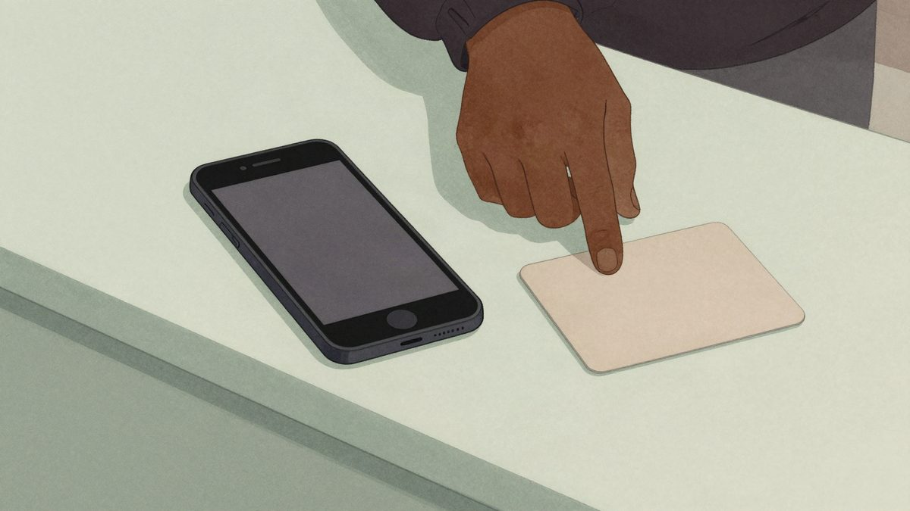
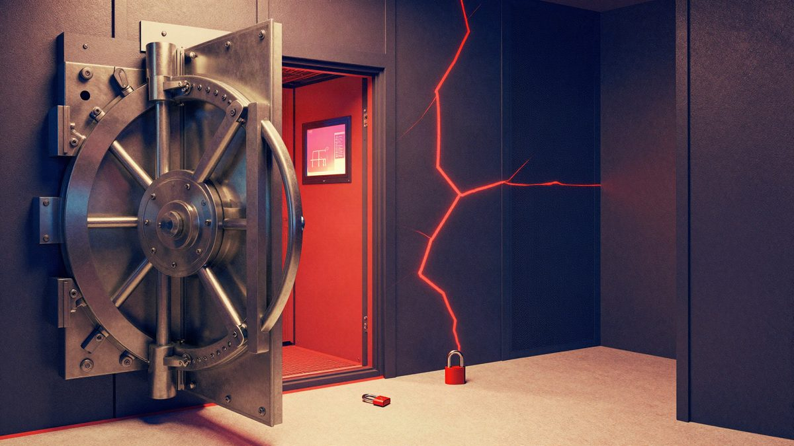

Skimmer kartica preko WebRTC-a pronađen je na stranicama Samsonitea, Revolvea i Lascane tjedan prije Black Fridaya

Skripta koja krade podatke o karticama otkrivena je na pet web trgovina: Lascana, Samsonite, American Tourister, Revolve i FWRD. Sve su je uklonile 24. ili 25. studenoga, a nije poznato koliko je podataka završilo kod napadača.
Tjedan prije Black Fridaya istraživači su na trgovinama Lascana, Samsonite, American Tourister, Revolve i FWRD pronašli skriptu za krađu podataka s kartica. Nakon njihove prijave trgovine su je uklonile 24. ili 25. studenoga, prije početka rasprodaja. Istraživači kažu da ne znaju je li ijedan kupac stvarno ostao bez podataka.
Skripta je navodno uzimala broj kartice, datum isteka i sigurnosni kod, a uz njih ime, adresu, telefon i e-mail kupca. Slala ih je napadačima dok je kupac još upisivao podatke, prije nego što je trgovina provjerila plaćanje. Zato su podaci mogli biti ukradeni i kad bi narudžba bila odbijena ili otkazana, a kupac ne bi primijetio ništa neobično.
Istraživači su skriptu na djelu vidjeli samo na Lascani, gdje je podatke njihove testne kartice poslala trećoj strani.
WebRTC kao kanal za krađu
Napad koristi WebRTC, tehnologiju za video pozive u pregledniku. Preko nje web stranica može otvoriti vlastiti kanal prema drugoj strani i razmjenjivati podatke. Istraživači smatraju da je odabrana jer je sigurnosna pravila i alati za nadzor često prate slabije nego obične web zahtjeve. Promet skimmera navodno je išao preko Cloudflareova releja, pa se miješao s običnim WebRTC prometom i skrivao pravo odredište.
Čini se da je napad usmjeren na mobilne uređaje. Skripta se učitavala samo na malim zaslonima ili zaslonima osjetljivima na dodir, a server ju je aktivirao samo na stranicama za naplatu. Provjere s desktopa i skeniranje početnih stranica zato vjerojatno ne bi ništa otkrili. Na Samsoniteu se izvodila samo na stranici /checkout.
Do stranica je stizala na četiri načina: preko postavke consent bannera, preko file-a na trgovčevu CDN-u, preko zajedničkog marketinškog pixela i preko vlastitog HTML-a trgovine. Sve tri varijante navodno koriste istu infrastrukturu napadača, pa istraživači smatraju da su pogođene i druge stranice.
Reakcije trgovina
Istraživači su 24. studenoga obavijestili Amazon Web Services zbog S3 bucketa s kojih se skripta posluživala, kao i Cloudflare, registrare domena, dobavljača pixela, davatelja consent bannera i pogođene trgovce. Lascana je Quorum pixel uklonila sa stranice 24. studenoga u 16:48 po hrvatskom vremenu. Quorum, platforma za praćenje učinka oglasa, potvrdio je da je zlonamjerni kod uklonjen iz njegova pixela i da je u 22:09 po hrvatskom vremenu vratio čisti marketinški pixel.
Revolve je u ime Revolvea i FWRD-a priopćio da ih je InfoHawk 25. studenoga obavijestio o mogućem sigurnosnom problemu na mobilnim i tablet verzijama stranica te da su ga riješili istog dana. Moguće posljedice, kažu, još istražuju.
Što preporučuju istraživači
Kupci koji su nedavno plaćali na tim stranicama trebali bi pregledati izvatke zbog nepoznatih transakcija, osobito na debitnim karticama. Ako postoji sumnja, treba odmah nazvati banku, prijaviti prijevaru i zatražiti novi broj kartice. Prema američkom zakonu odgovornost za neovlaštene naplate kreditnom karticom ograničena je na 50 $ (oko 45 eura), a obično je nula kad je ukraden samo broj kartice. Debitne kartice imaju slabiju zaštitu, koja ovisi o brzini prijave.
Trgovcima savjetuju da provjere koji se tracking pixeli učitavaju na stranicama za plaćanje i prijavu, tko može mijenjati te file-ove i trebaju li ondje uopće biti. Istraživači upozoravaju da svaki pixel može izvršiti kod iz file-a svog dobavljača, pa i skimmer. Pravilo connect-src može blokirati dva obična web zahtjeva koja skripta treba prije otvaranja WebRTC kanala, pa skimmer tada ne bi mogao raditi.
Sličan je propust navodno iskorišten 16. studenoga 2026. u Optimizelyjevu proizvodu Web Experimentation. Napadač je prema izvješćima dodao zlonamjeran kod u projekte korisnika, a Optimizelyjevi serveri isporučili su ga posjetiteljima stranica 178 organizacija, među kojima su Zoom, BBC i CNN.
Izvor: Hacker News
Povezani članci
 Optimizely je hakiran: zlonamjerni kod stigao na Zoom, GitLab, BBC i CNN, ukradena kripto sredstva16. studenoga 2026.
Optimizely je hakiran: zlonamjerni kod stigao na Zoom, GitLab, BBC i CNN, ukradena kripto sredstva16. studenoga 2026.
1Password priznao provalu, napadač došao do imena i e-mail adresa korisnika, a sefovi nisu dirani25. studenoga 2026.- Qoo10 hakiran: izloženi podaci više od 30 milijuna članova, među njima adrese i geokoordinate13. studenoga 2026.